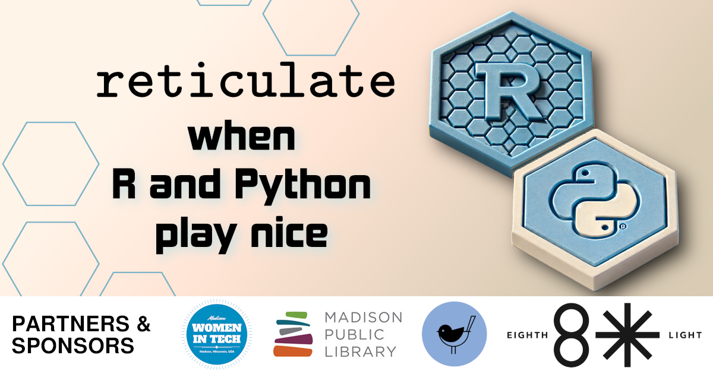

This August, we're partnering again with Madison's Women-in-Tech (WiT) meetup group. All genders are welcome at this event. Feel free to arrive between 6:00pm and 6:30pm to network with other attendees. The presentation will start at 6:30pm.
Developers and data scientists often work together towards common goals, but sometimes they use different tools to achieve those goals. It is often said that Python is the second-best language at everything; however when it comes to data science, R reigns supreme. Fortunately, there's a package for that! Reticulate is an R package that provides a comprehensive set of tools for interoperability between Python and R. Come by the MadPy August meeting to learn how to have the best of both worlds!
Jennifer Knack is a microbiologist, molecular biologist, and data scientist with International Flavors and Fragrances (IFF), where she works in probiotics R&D. Jennifer learned R in graduate school while pursuing a PhD in microbial ecology, and she began learning Python after joining IFF. She's a cat mom to two fuzzy boys, and in her spare time she enjoys crafting, playing outside, and filling her brain with as much knowledge as possible.